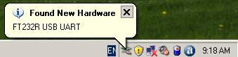
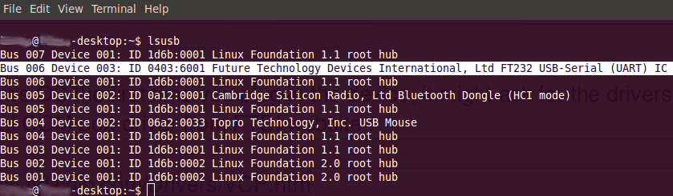

Zigbee Networking with XBee Series 2 and Seeed's Products
- This step-by-step tutorial is created to help users learn to use XBee ZB modules with Seeeduino / Arduino, XBee® Shield, UartSBee, Grove - XBee Carrier, Seeeduino Stalker v2.0. These products makes life easier for working with XBee ZB modules.
- XBee ZB modules can be used in many different ways. They also provide lots of configuration parameters. In this tutorial, we have tried to showcase the essential configurations in simple steps.
- Please read through the complete tutorial at-least once, before deciding which configuration to use for your application.
- This tutorial makes use of XBee Series 2 modules and does not use the old Series 1 modules. We sell Series 2 modules in our Bazaar.
Zigbee Modules and Network
Zigbee is a standard for low-power, short range wireless devices based on an IEEE 802 standard for personal area networks(PAN). Zigbee modules work in unlicensed ISM(Industrial Scientific Medical) band. Zigbee devices are capable of peer-to-peer, point-to-multipoint and mesh communication. They offer convenient low power wireless solutions for embedded systems where power consumption is a critical factor. A Zigbee network consist of three different types of ZigBee devices: coordinator, router, end-device. Each network has a 16bit PAN ID. All devices in a Zigbee network is assigned a single PAN ID.
Device Types
- ZigBee coordinator (ZC): The most capable device, the coordinator forms the root of the network tree and might bridge to other networks. There must be one ZigBee coordinator in each network since it is the device that starts the network originally. The coordinator initiates a Personal Area Network(PAN) by selecting a RF channel and PAN ID. ZC also allows routers and end-devices to join the PAN. It is able to store information about the network, including acting as the Trust Center & repository for security keys.
- ZigBee Router (ZR): As well as running an application function, a router can act as an intermediate router, passing on data from other devices. A router can start operation only when it has establishes connection with ZC
- ZigBee End Device (ZED): Contains just enough functionality to talk to the parent node (either the coordinator or a router); it cannot relay data from other devices. This relationship allows the node to be asleep a significant amount of the time thereby giving long battery life. A ZED must join PAN like a router before sending any senor data. A ZED requires the least amount of memory, and therefore can be less expensive to manufacture than a ZR or ZC.
Device Addressing
- When a device connects to a Zigbee network it gets a 16-bit Network address.
- Each device(node) has a 64-Bit Device address. In XBee ZB modules, this 64-bit address is a unique permanent number assigned by the manufacturer. This is also the serial number of the device.
Any data sent from one Zigbee device to another is sent by specifying the 16-bit Network Address and the 64-bit Device Address.
Getting Zigbee modules
Seeedstudio Bazaar currently sells two types of Zigbee modules from digi :
XBee® RF Modules ZNet 2.5 RF Module modules are Series 2 hardware which comes with ZNet 2.5 firmware.
In this tutorial we are going to use XBee ZB firmware on a XBee Znet 2.5 Module. XBee ZNet 2.5 Module modules can be upgraded to XBee ZB firmware by following the procedure listed at Converting a XBee/XBee-PRO ZNet 2.5 Module to a ZB Module. This procedure is also illustrated in the next section.
XBee ZB Hardware and Pin Layout
- XBee ZB module is available with a chip antenna.
http://www.seeedstudio.com/depot/images/product/xbee2.jpg
- Pins of XBee ZB module are shown below.

Upgrading XBee firmware with UartSBee or Grove - XBee Carrier
The XBee modules have to be configured with a 3.3V logic UART. Both UartSBee and Grove - XBee Carrier comes with FT232RL based USB to Serial Port and a XBee compatible socket.
Installing drivers for USB-to-Serial Port
- Install the necessary driver for FT232RL chip by following the below steps :
Windows
- In Windows OS, the first time you plug in the device (UartSBee or Grove -XBee Carrier), you might be asked for the driver.

Download and install the Virtual COM port driver from FTDI website :
http://www.ftdichip.com/Drivers/VCP.htm
- A wizard opens for installing the driver. Choose "Install from a list or specific location"

- Choose the downloaded driver path

- If you have downloaded unsigned driver, the following Window appears. Just click "Continue Anyway"

- UartSBee driver is successfully installed. Windows assigns a COM port name to FT232RL like COM10, COM11 etc... Please check the exact name in Device Manager. In this case "COM16" is assigned for UartSBee

GNU/Linux
All modern GNU/Linux OS comes with FT232RL drivers. To check if UartSBee or Grove -XBee Carrier is detected, Issue a lsusb command. An output similar to below should appear.

GNU/Linux assigns /dev/ttyUSB0, /dev/ttyUSB1 etc... as device name.
Using Digi's X-CTU (XCTU) Software
X-CTU is XBee Configuration and Test Utility. It is primarily used for configuring XBee Modules from Digi and also to upgrade the onboard MCU firmware. It comes with a Serial-Terminal to interact with XBee modem using AT commands. X-CTU is a Windows application. But, it is known to work under GNU/Linux using Wine .
- Download X-CTU from Digi's X-CTU Page
- Install X-CTU.
- Open X-CTU --> PC Settings Tab.
- Select USB Serial Port (which is connected to UartSBee / Grove - XBee Carrier).
- Click Test / Query Button
- A dialog box shows the Modem Type, Modem firmware Version and Serial Number.
- In this case, XBee ZNet 2.5 modem is displayed as XB24-B. This has to be upgraded to XB24-ZB firmware.
- Open Modem Configuration Tab.
- Click Download New Versions button.
- This opens the following dialog box :
- Click Web button. This downloads all devices firmware from digi's server.
- Once, latest firmwares are downloaded an update summary is displayed. This indicates that update happened without any issue. If you do not get this dialog box, repeat the above steps.
- Open Modem Configuration Tab.
- Click Modem Parameters and Firmware --> Read button.
- XBee ZNet 2.5 firmware XB24-B is detected and all its configured parameters are shown.
- It also shows the firmware Function Set as ZIGBEE ROUTER/END DEVICE AT and version as 1220.
- Function Set decides which firmware is already programmed / to be programmed to XBee Module. Series 2 devices can be used in many different modes(ZC or ZR, ZED). We have to choose the appropriate firmware function set.
- Now, Update the firmware to XB24-ZB. (Please note, we are not using XB24-B firmware, we are using a different firmware set compatible with XBee ZNet 2.5 Module Hardware)
- Select Modem:XBEE as XB24-ZB
- Select Function Set as ZIGBEE COORDINATOR AT.
- Note: ZIGBEE COORDINATOR AT is one function set that we will use in the next section. You can choose any function set which is suitable for you application.
- Select the latest version of firmware. At the time of writing this guide, it is 208C
- Click Write button. This permanently writes the firmware to XBee module.

Wireless UART demo using XBee ZB modules and PC
This demo configures two XBee modules to connect to each other automatically upon power-up and continuously trans-receive data. This setup can be used as a Wireless UART to connect any two PCs or two MCUs with serial ports.
- Use two UartSBee or two Grove - XBee Carrier with two XBee ZB modules.
- Connect these modules to PCs Serial port and make sure the drivers are installed.
- Open X-CTU, select the USB-Serial Ports of the device as shown below :
- Program one module with COORDINATOR AT function-set firmware and another module with ROUTER AT function-set firmware. Always use the latest version of firmware. See the above section on how-to program firmware.
- Now, Open Modem Configuration Tab and configure the destination addresses of both the modules as follows:
- Set the destination address high of COORDINATOR to serial number high of ROUTER.
- Set the destination address low of COORDINATOR to serial number low of ROUTER.
- Set the destination address high of ROUTER to serial number high of COORDINATOR.
- Set the destination address low of ROUTER to serial number low of COORDINATOR.
- Write these parameters to the modules.
- PAN ID was not modified during parameters configuration. It was left to 0, as there is only one Zigbee network in the vicinity. You might want to change these PAN IDs (of both the modules) to a 16bit number.

- Open the Terminal Tabs for both the modules and click the Show Hex buttons.
- Type a message in COORDINATOR terminal and it will be sent to ROUTER via wireless. Similarly, any text typed in ROUTER terminal is sent to COORDINATOR terminal.
Wireless UART demo using XBee ZB modules and Arduinos
Wireless Sensor Networks(WSN) demo with XBee ZB modules
Configuring a standalone sensor nodes using XBee ZB module and Grove - XBee Carrier
Configuring a Zigbee Coordinator using XBee ZB module, Seeeduino and XBee® Shield
Using Seeeduino as Internet Gateway using XBee ZB module,Wifi Bee and Bees Shield
References
Related Projects
If you want to make some awesome projects by XBee, here's some projects for reference.
Hummingbird
This is an interesting demo made by XBee and Grove.
This project uses a zigbee mesh and GPRS SIM900 card to communicate to a server. The server conducts an analysis on the data and provides the user with real time information as well as forecasting.
I want to make it.
Hot Water Solar Boiler Project
This is an IoT demo made by XBee and Grove.
A solar boiler is great because it gives you hot water using free-sun-energy, but what if there is not enough sun or someone already used all the hot water ? This project helps you take the right decision. It warns you when you run out of hot water and allows you to turn on the electric heating. It also let you know when you can take a bath or shower !
I want to make it.
Share Your Awesome Projects with Us
Born with the spirit of making and sharing, that is what we believe makes a maker.
And only because of this , the open source community can be as prosperous as it is today.
It does not matter what you are and what you have made, hacker, maker, artist and engineers,
as long as you start sharing your works with others,
you are being part of the open source community and you are making your contributions .
Now share you awesome projects on with us on Recipe, and win a chance to become the Core User of Seeed.
- Core Users, are those who showing high interests and significant contributions in Seeed products.
- We cooperate with our Core Users in the development of our new product, this, in another word, the Core Users will have the chance to experience any new products of Seeed before its official launch, and in return we expect valuable feedback from them to help us improving the product performance and user experience. And for most of cases if our Core Users have any good ideas for making things, we'll offer hardware pieces, PCBA services as well as technical support. Besides, further commercial cooperation with the Core Users is highly possible.
Get more information about Core User please email to: recipe@seeed.cc
Copyright (c) 2008-2016 Seeed Development Limited (
www.seeedstudio.com /
www.seeed.cc)
This static html page was created from http://www.seeedstudio.com/wiki

{kind=link}